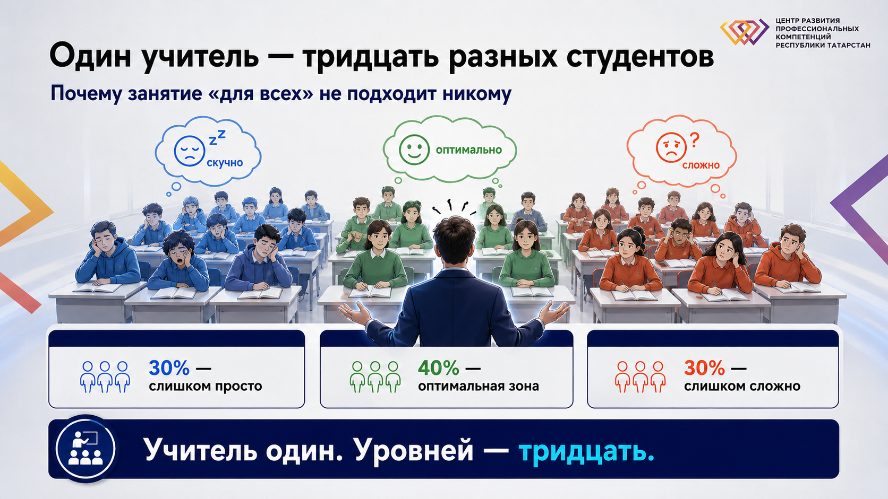
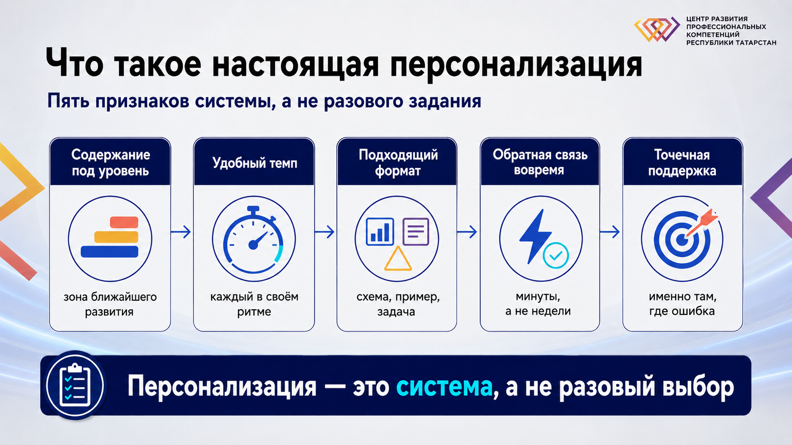
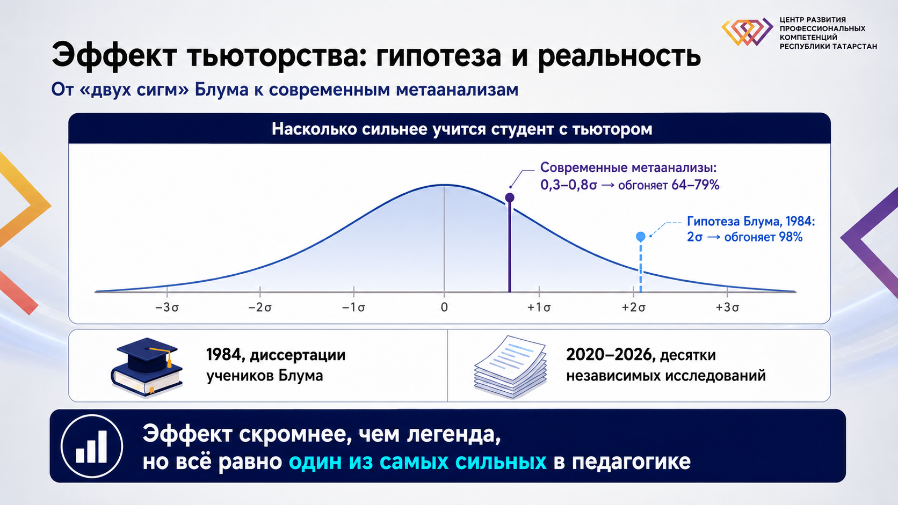
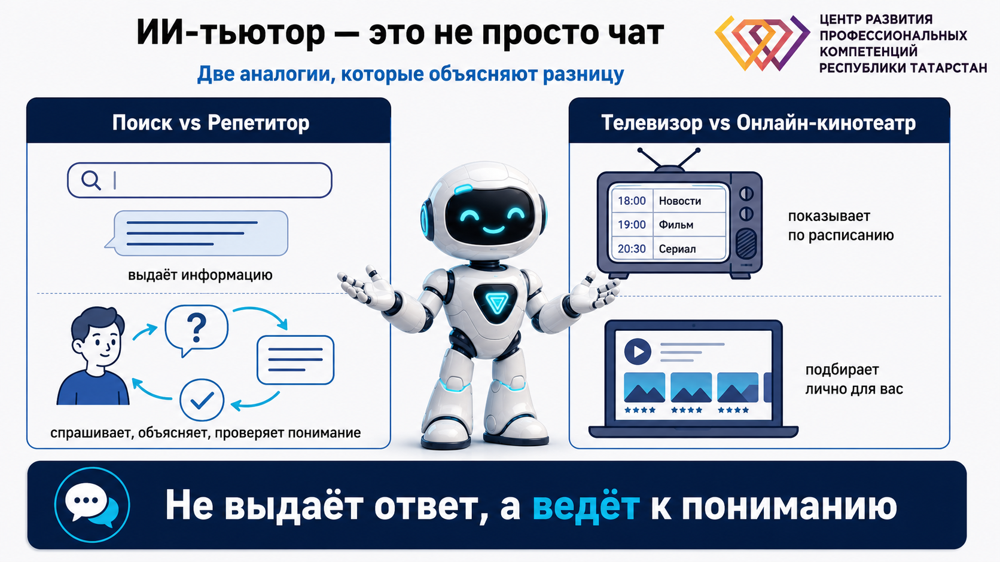
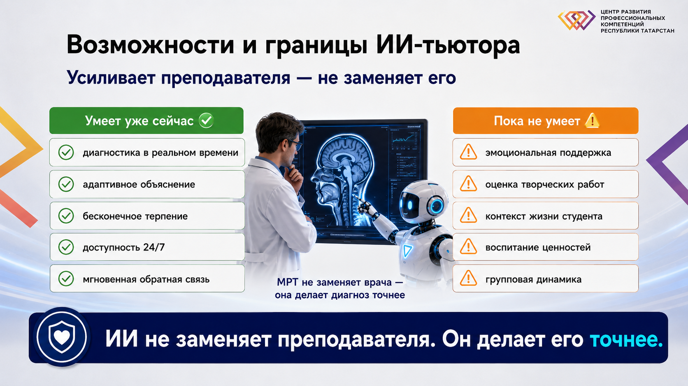
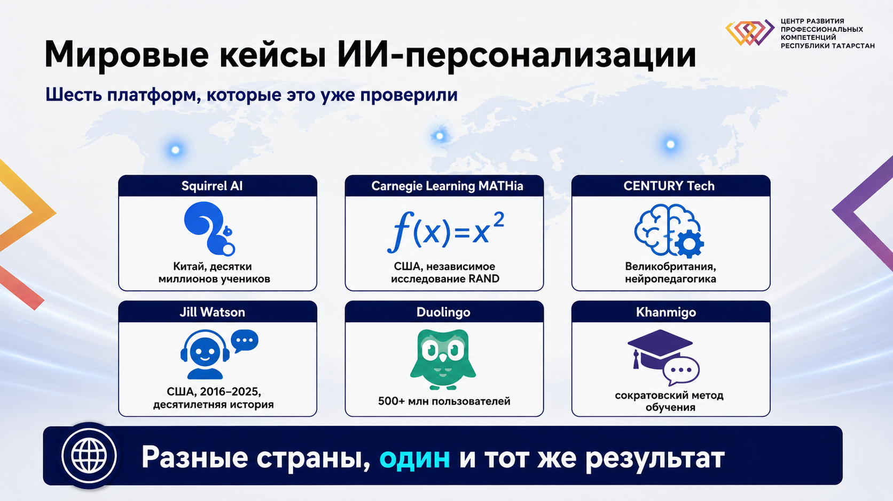
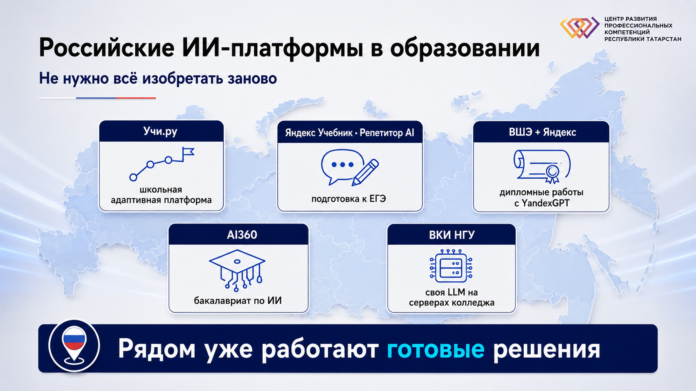
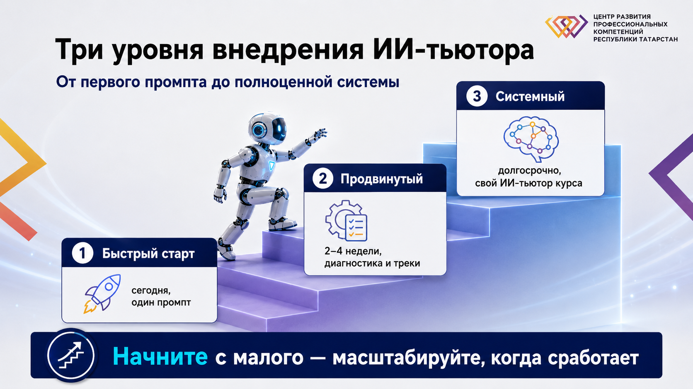

Проблема массового образования
В группе 25–30 человек с разным уровнем подготовки, темпом обучения и стилем восприятия. Занятие готовится на «среднего» студента — и это математически не может подойти всем.
Сколько студентов в вашей самой большой группе? Скорее всего, «20+», «30+», а у кого-то — «50+». Вопрос в том, как при таком количестве найти индивидуальный подход к каждому.

Мы знаем, что каждому нужен индивидуальный подход, но физически не можем его обеспечить — вернее, не могли до сих пор.
Что такое настоящая персонализация
Слово звучит отовсюду, но чаще всего под ним понимают совсем не то. Разберёмся, что персонализация — это НЕ, и что это система, работающая постоянно, а не разовое задание.
Персонализация — это НЕ:
- Дать студенту выбрать тему проекта — это свобода выбора
- Разрешить сдать работу в разном формате — это гибкость требований
- Дать отличникам сложные задания, а отстающим — упрощённые — это дифференциация, лишь один из элементов
1. Содержание под его уровень
Не «лёгкое» или «сложное», а точно откалиброванное — чуть выше того, что студент уже умеет. Психологи называют это зоной ближайшего развития: задача трудная настолько, чтобы требовать усилий, но не вызывать отчаяния.
2. Удобный темп
Один студент усваивает тему за 20 минут, другому нужен час и три разных объяснения. В классическом уроке оба вынуждены двигаться в одном ритме — при персонализации каждый идёт в своём.
3. Подходящий формат подачи
Одному проще понять через схему, другому — через жизненный пример, третьему — через практическую задачу. Не потому что у них «разные типы мышления» (это не подтверждено исследованиями), а потому что разный контекст и опыт.
4. Обратную связь в нужный момент
Обратная связь эффективна, если дана в течение нескольких минут после ошибки. Когда студент получает исправленную работу через неделю — момент упущен, и ошибки просто повторяются снова.
5. Поддержку именно там, где «спотыкается»
Не общие рекомендации «подтяни математику», а конкретная дополнительная практика на ту операцию, которую студент делает неверно.

Почему это было невозможно раньше
Идея персонализации не нова — ей больше ста лет. Лев Толстой в Яснополянской школе и Мария Монтессори строили системы индивидуального обучения. Обе работали. Обе не стали массовыми: один преподаватель физически не может качественно вести 25–30 студентов индивидуально, а на настоящую индивидуализацию группы нужно 3–5 преподавателей на класс.
Эффект тьюторства: гипотеза Блума и то, что подтвердилось на практике
В 1984 году Бенджамин Блум, обобщив диссертации своих аспирантов, сообщил: студент с личным тьютором обгоняет 98% студентов без него («проблема двух сигм»). Переключите вид ниже, чтобы увидеть, что показали десятки независимых исследований 2011–2026 годов.
2σ → средний студент с тьютором обгоняет 98% студентов без него. Источник: Bloom, 1984, «The 2 Sigma Problem» — обобщение диссертаций на выборках 40–70 школьников.
0,29–0,79 стандартного отклонения → обгоняет 64–79% группы, в зависимости от исследования:
- Nickow, Oreopoulos & Quan (2020/2024) — 96 независимых исследований школьного тьюторства: 0,29–0,37 SD (≈64–65%)
- VanLehn (2011) — очное человеческое тьюторство: d≈0,79 (≈79%)
- Kraft, Schueler & Falken (2024/2026) — с поправкой на реальное масштабирование: 0,16–0,22 SD
Даже скромная величина — один из самых высоких эффектов, зафиксированных в педагогике (типичный эффект школьных программ не превышает 0,1 SD). Главный вывод Блума в силе: индивидуальный подход работает — просто не в два раза сильнее, а устойчиво и воспроизводимо сильнее.

ИИ-тьютор: личный наставник для каждого студента
ИИ-тьютор — не просто чат с ИИ. Это система, которая знает студента, адаптируется в реальном времени, обучает через вопросы вместо готовых ответов, отслеживает прогресс и следует педагогическим принципам.
Google vs Репетитор
Google выдаст информацию. Репетитор спросит, что вы знаете, объяснит на понятных примерах, проверит понимание, даст практику.
Телевизор vs Онлайн-кинотеатр
Обычный телевизор покажет программы по расписанию. Онлайн-кинотеатр анализирует интересы и рекомендует лично то, что будет интересно именно вам.

Попробуйте сами: сократовский диалог Khanmigo
ИИ-тьютор Khan Academy не выдаёт готовый ответ — он ведёт студента к пониманию вопросами. Нажимайте «Далее», чтобы пройти диалог целиком.
Возможности и ограничения ИИ-тьюторов
ИИ — не волшебная палочка. У него есть сильные стороны, которые работают уже сегодня, и границы, которые остаются за человеком.
Умеет уже сейчас ✅
- Диагностика в реальном времени — видит не только правильность ответа, но и время раздумья, систематические ошибки, пробелы в базовых знаниях
- Адаптивное объяснение — подаёт тему через схему, пример, задачу или аналогию, ориентируясь на реакцию студента, а не на «тип личности»
- Бесконечное терпение — студент может переспрашивать 10, 20, 50 раз без осуждения
- Доступность 24/7 — помощь в 11 вечера, а не с пустой тетрадью наутро
- Мгновенная обратная связь — указывает на ошибку и даёт шанс исправить сразу, а не через неделю
Пока не умеет ⚠️
- Эмоциональная поддержка — не чувствует, когда нужна не помощь с задачей, а вера в студента
- Оценка творческих работ — ограничен в оценке по-настоящему нестандартных решений
- Контекст жизненной ситуации — не знает про семейные проблемы или ночную работу
- Формирование ценностей — воспитательная функция остаётся за человеком
- Групповая динамика — не модерирует дискуссии, не создаёт командный дух

Данные и академическая честность
Когда студенты передают работы в ChatGPT или GigaChat, данные могут использоваться для дообучения моделей, если не настроено иное — для работы со студентами используйте корпоративные версии с политиками конфиденциальности. Это особенно важно там, где затрагиваются персональные данные (152-ФЗ).
Задайте себе правило: ИИ помогает понять, но не делает вместо студента. Практический способ проверить — попросить студента объяснить тему своими словами или устно защитить решение после работы с ИИ-тьютором.
Мировые кейсы: персонализация на практике
Шесть платформ, которые уже проверили ИИ-персонализацию на реальных студентах — с проверенными цифрами и честными оговорками там, где данные исходят от самих компаний.
Squirrel AI (Китай) — ИИ против традиционного учителя
Китайская платформа адаптивного обучения. По данным самой компании, на 2026 год ей пользуются свыше 40 миллионов человек через 3000+ учебных центров (независимого аудита цифры нет).
Заявления компании: +25% к результатам по математике за семестр; в уезде Цинтай освоение материала выросло с 56% до 89% за два месяца; в декабре 2025 заявлен рекорд Гиннесса за эксперимент «ИИ против традиционного обучения» на 1662 учениках из 5 школ.
Важная оговорка: это заявление компании, а не независимо подтверждённые данные — анализ рекорда проводило нанятое и оплаченное Squirrel AI агентство, страницы записи на официальном сайте Guinness World Records не найдено.
Инсайт: наибольший прирост компания фиксирует у слабых учеников — ИИ-персонализация выравнивает неравенство, а не только усиливает сильных.
Carnegie Learning MATHia (США) — когнитивная наука + ИИ
Адаптивное ядро восходит к системе Cognitive Tutor Университета Карнеги-Меллон, переименованной в MATHia около 2010–2011 года.
Независимое исследование RAND (Pane, Griffin, McCaffrey, Karam, 2014) охватило свыше 18 000 студентов в 147 школах. У старшеклассников за два года — статистически значимый прирост +0,21 SD («почти двукратное» ускорение прогресса, по формулировке Carnegie Learning). Для средней школы значимого эффекта не было.
Статус ESSA Tier 1 присвоен всему комплексному курсу Math Solution, а не отдельно MATHia — сама платформа как отдельный инструмент имеет более скромный статус Tier 2 («Умеренные доказательства»).
Инсайт: ИИ исправляет не только незнание, но и конкретную неверную ментальную модель — это качественно другой уровень помощи, чем учебник.
CENTURY Tech (Великобритания) — нейронаука в классе
Британская платформа, объединяющая ИИ с нейропедагогикой: учитывает когнитивную нагрузку и кривую забывания.
В июле 2025 CENTURY опубликовала собственный отчёт по 15 школам треста Discovery: 4 из 5 активных пользователей достигли ожидаемого уровня по математике; активные пользователи втрое чаще выходили на высокий уровень по трём предметам; средний совокупный балл был выше на 4,6 пункта.
Это исследование самой компании, не независимый эксперимент. Программа EdTech Demonstrator, с которой иногда связывают CENTURY, присваивалась школам, а не компаниям, и была официально свёрнута Минобразования Великобритании в 2022 году.
Инсайт: персонализация освобождает учителя от рутины — он видит, кому именно нужна помощь прямо сейчас, а не через две недели после контрольной.
Jill Watson (Georgia Tech, США) — ИИ-ассистент, которого не отличили от человека
В 2016 году профессор Эшок Гоэл создал виртуального ассистента на базе IBM Watson для курса по ИИ в Georgia Tech — студенты весь семестр не догадывались, что общаются с ботом.
2025 год: новая версия на базе ChatGPT + RAG протестирована на 600+ студентах при поддержке Национального научного фонда США и фонда Гейтсов. Точность ответов Jill Watson — 78,7%, у стандартного ассистента OpenAI — 30,7%. Оценку A получили 66% студентов с доступом к Jill против 62% без неё; оценок C — втрое меньше.
Инсайт: ИИ в образовании — не мода последних лет, а десятилетняя история реальной работы в аудитории; ассистент, «знающий» конкретный курс, точнее универсального чат-бота.
Duolingo — ИИ знает, что вы забудете
По данным компании, на 2025–2026 год у платформы свыше 500 миллионов зарегистрированных пользователей и порядка 135–160 миллионов активных в месяц.
Исследование Vesselinov & Grego (2012, заказано и оплачено Duolingo, не рецензировалось): 34 часа занятий соответствуют переходу с первого на второй семестр университетского испанского. Более позднее независимое рецензируемое исследование (Smith, Jiang & Peters, 2024) подтвердило похожий эффект на новой выборке за ~27 часов.
Инсайт: система видит паттерны забывания, невидимые человеку, и напоминает слово ровно в момент, когда вы вот-вот его забудете.
Khan Academy (Khanmigo) — сократовский метод
Khanmigo используют более 2 миллионов человек — за 2024–2025 учебный год число регистраций выросло на 731% (официальный годовой отчёт Khan Academy).
По внутреннему тестированию компании (октябрь 2025 — апрель 2026, ~15 млн диалогов), последовательные улучшения ИИ-тьютора дали прирост правильности решения следующей задачи на 6,1%.
Растиражированная в интернете цифра «улучшение результатов по математике на 23%» не подтверждается ни Khan Academy, ни независимыми рецензируемыми исследованиями — похоже, распространилась через SEO-статьи со ссылкой на несуществующее исследование.
Инсайт: Khanmigo не даёт готовые ответы — он ведёт студента к пониманию через наводящие вопросы, шаг за шагом.

Российские ИИ-платформы: что уже работает рядом
Не нужно создавать всё с нуля — можно встроить существующие инструменты в свою практику и рекомендовать их студентам.
🇷🇺 Учи.ру
Входит в перечень ЭОР Минпросвещения (обновлён в августе 2025, 1425 ресурсов). В 2023–2024 учебном году — 14,5 млн учеников и 749 тыс. учителей; по оценке компании, в 2024 году число учеников превысило 18 млн.
🤖 Яндекс Учебник · Репетитор AI
ИИ-помощник по информатике — с ноября 2023 года; с октября 2025 добавилась математика под именем «Репетитор AI» (семейство моделей Alice AI). Около 120 тысяч выпускников пользовались тренажёрами — это 85% всех сдававших ЕГЭ по информатике. Личный кабинет учителя анонсирован на конец 2025 года.
📚 ВШЭ + Яндекс
Пилот по ИИ в дипломных работах стартовал в 2024 году в ВШЭ, с 2025 года — в 11 вузах (ВШЭ, ИТМО, КФУ, НГТУ, ННГУ, СибГМУ, СКФУ, ТГУ, ТюмГУ, Университет Правительства Москвы, УрФУ), более 500 студентов работают с YandexGPT 5.
🎓 AI360
Бакалавриат Яндекса и Сбера с ИТМО, ВШЭ, МФТИ и Университетом Иннополис. Первый набор (2024/2025) — 100 человек; с 2025/2026 — пятый вуз-партнёр СПбГУ, набор вырос до 156 человек (+56%).
🖥️ ВКИ НГУ
В марте 2025 Высший колледж информатики НГУ первым за Уралом развернул собственную LLM (Qwen 2.5 Coder + DeepSeek) на своих серверах — данные студентов не уходят во внешнее облако.

Пилотные проекты ИИ в России — развернуть таблицу
| Инициатива | Уровень | Статус и охват |
|---|---|---|
| НИТУ «МИСиС» + фонд «Вклад в будущее» | Школы | С 2021, 10 школ; продолжает работать как AI-Academy |
| ВШЭ + Яндекс — дипломные работы | Вузы | С 2024 (ВШЭ), с 2025 — 11 вузов, 500+ студентов |
| AI360 | Вузы | 100 → 156 человек, 5 вузов-партнёров |
| Федеральный проект «Искусственный интеллект» | Школы, вузы, доп. образование | Продлён до 2030; 97,8 тыс. участников конкурсов и хакатонов |
| Великий Новгород — «Стади Ниндзя» | Школы | Анонсирован пилот в индивидуальном формате; масштабный запуск не подтверждён |
| Уральские вузы | Вузы | Отдельные внедрения; сводных данных нет |
Как применить в вашей практике: три уровня
От промпта, который можно использовать сегодня, до полноценного ИИ-тьютора курса. Промпты готовы к копированию — подставьте свой предмет и уровень группы.
Можно начать сегодня. Создайте базового ИИ-помощника для студентов в GigaChat или ChatGPT.
Ты — тьютор по [ваш предмет]. Твоя задача — помогать студентам [уровень: колледж/вуз] понимать материал, но НЕ давать готовые ответы. Когда студент задаёт вопрос: 1. Сначала узнай, что он уже понимает 2. Задавай наводящие вопросы 3. Объясняй через простые аналогии 4. Проверяй понимание 5. Если студент застрял — разбей задачу на более простые шаги Стиль: дружелюбный, терпеливый, мотивирующий. Начинай диалог так: "Привет! Я помогу разобраться с темой. Расскажи, что уже понял, и где возникли сложности?"
2–4 недели на внедрение. Диагностируйте пробелы и разделите студентов на треки.
Создай 10 диагностических вопросов по теме [название], которые покажут пробелы в знаниях студентов. Требования: - Вопросы должны быть разной сложности - Каждый вопрос тестирует конкретный аспект понимания - Включи объяснение, какой пробел выявляет каждый вопрос
Долгосрочная стратегия. Обучите ИИ стать полноценным экспертом по вашему курсу.
Ты — методист курса [название]. Вот базовый материал лекции [текст]. Создай адаптивную версию: 1. Вводный тест на 5 вопросов для определения уровня 2. Три версии материала: базовая, стандартная, углубленная 3. Практические задания для каждого уровня 4. Критерии, когда переводить студента на следующий уровень
